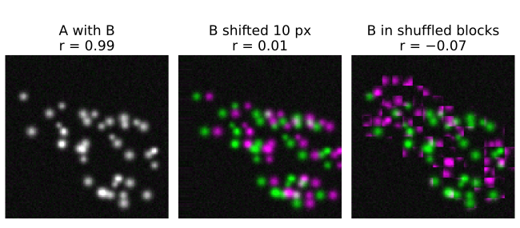
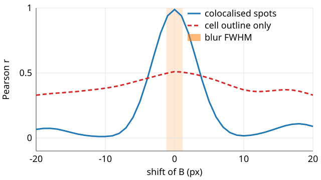
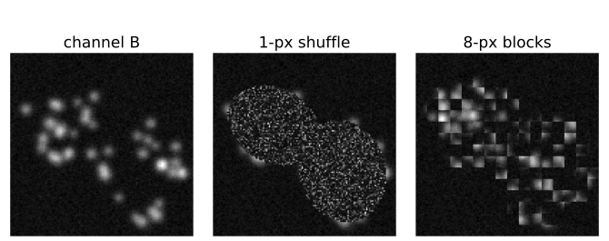
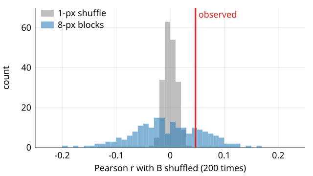
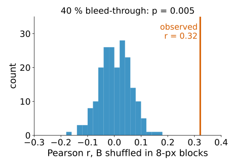
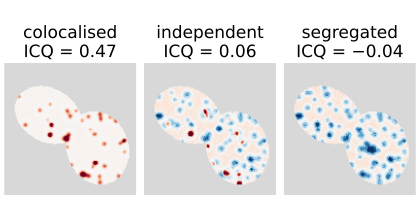
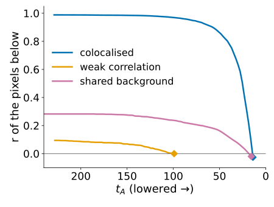

Is it more than chance? Shift curves, randomisation and the ICQ
Image analysis
About this lecture
The last unit turned two channels into numbers: r, M1, M2. A number alone does not say whether the two proteins are together more than by chance. Today: references for “no colocalisation”.
The shift curve: r against a shift of one channel.
Randomisation: shuffle blocks of one channel, many times; a permutation p-value.
Why blocks and not single pixels: neighbouring pixels are not independent.
What the test does not protect against.
Li’s ICQ and the product-of-differences image: where the correlation comes from.
Costes’ threshold as a null idea, and when it fails.
Slides titled The math give the formulas and proofs; the ideas are complete without them.
A reference for “no colocalisation”
A coefficient means nothing without the value it would have if the channels were unrelated.
Independent structures do not give r = 0 exactly: the demo’s independent channels give −0.08 inside the cells (the structures avoid each other a little, by chance).
M1 and M2 of independent channels are not 0 but about the area share of the other channel above its threshold (demo: about 0.2).
So the question is always: is the observed value outside what unrelated channels of the same kind would give?
Two ways to make “unrelated channels of the same kind”: shift one channel, or shuffle it in blocks. Both keep each channel’s own picture; both break the link between them.

The shift curve
Shift B against A by \Delta x = -20 \dots 20 px and compute r for every shift (van Steensel et al., 1996).

Colocalised small structures: a narrow peak at 0, as wide as the structures plus the blur (demo: half width 3.7 px), falling to about 0.1 at ±20 px.
Large-scale correlation (both channels bright in the cells, dark outside): a broad hump that survives large shifts (whole image: 0.51 at 0, still 0.33 at ±20 px).
A peak off zero means the channels are shifted against each other (unit 4: chromatic shift).
The math: the width of the peak
Model a structure as a 2D Gaussian of width \sigma in both channels. Shifted by \delta, the normalised overlap (the cosine of the last unit) is
because the product of two Gaussians is a Gaussian centred halfway, with the exponent -\big(|\mathbf x|^2 + |\mathbf x - \boldsymbol\delta|^2\big)/2\sigma^2 = -|\mathbf x - \boldsymbol\delta/2|^2/\sigma^2 - \delta^2/4\sigma^2.
Half height at \delta = 2\sigma\sqrt{\ln 2} \approx 1.67\,\sigma \approx 0.71 FWHM of the structure.
Demo: structures of radius 1.3–2.5 px blurred by σ = 1 px, total σ ≈ 2.2 px: predicted half width 3.6 px, measured 3.7 px.
Sub-pixel peak: a parabola through the three values around the maximum, offset (r_{-} - r_{+}) / \big(2(r_{-} - 2r_0 + r_{+})\big) (recall stitching). Demo: a shift of 2.4 px is found at 2.39 px.
Try it: shift curves
Randomisation
Destroy the spatial relation between the channels, but keep each channel’s own statistics (Costes et al., 2004):
Cut B into blocks (inside the region), shuffle the blocks, put them back.
Compute r of A against the shuffled B.
Repeat, say 200 times: the null distribution of r for “same images, no relation”.
p-value = share of shuffles with r at least as large as the observed one.
Each shuffled B has the same intensities, the same structures and the same blur as the real B: only the link to A is gone.

Why blocks, not pixels

Neighbouring pixels are not independent: the PSF spreads every point over several pixels, and structures are several pixels wide.
Shuffling single pixels destroys that and gives a null far too narrow: independent channels (blur σ = 2 px), r = 0.047; 1-px shuffle: sd 0.013, none of 200 reaches 0.047: “significant”, wrongly.
Blocks about the size of the blur or the structures (8 px) keep each channel’s texture: sd 0.064, 44 of 200 reach 0.047, p = 0.22: no evidence. Correct.
The math: the permutation p-value
With N shuffles giving r^*_1, \dots, r^*_N and the observed r_\text{obs}:
The +1 counts the observed image as one of the possible arrangements: under the null it is just another shuffle, so p is never 0, and P(p \le \alpha) \le \alpha exactly.
The smallest reachable p is 1/(N + 1): 0.02 with 50 shuffles, 0.005 with 200. “None of 200” means p = 0.005, not p = 0.
Demo, 8-px blocks: p = (1 + 44)/201 = 0.224.
The math: how wide should the null be?
For nindependent pixel pairs from unrelated channels, E[r] \approx 0 and \operatorname{var} r \approx 1/(n - 1).
Inside the cells n = 5978: sd \approx 1/\sqrt{5977} = 0.013, what the 1-px shuffle gives.
Correlated pixels carry less information. If the structures (plus blur) are about w pixels wide, the image holds roughly n_\text{eff} \approx n / w^2 independent samples (order of magnitude; the exact factor depends on the autocorrelation).
So the honest sd is about w times larger: the demo’s 0.064 with 8-px blocks is 5× the 0.013, i.e. w \approx 5 px, the FWHM of the blurred structures.
The textbook test of r assumes independent samples: on images it is wrong by that factor.
Try it: randomisation
What the test does not protect against
Randomisation asks: is the overlap in these two images more than chance? Not: are the two molecules together?
Bleed-through puts a copy of A into B: real overlap in the images. Demo, independent structures, 40 % leakage: r = 0.32; none of 200 block shuffles reaches it, p = 0.005. The test is right about the images, and the conclusion about the proteins is wrong.
A shared uneven background (illumination, autofluorescence) and the cell outline are also real overlap.
Structures closer than the resolution overlap in the image whatever their true distance.

These are fixed before the test, not by it (unit 4). And one p-value per image is not a comparison between conditions: that needs replicates (the evaluation day).
Li’s ICQ: where does the correlation come from?
Per pixel, the product of the differences from the mean (PDM): (A - \bar A)(B - \bar B) (Li et al., 2004).
Positive where both are above their means, or both below: the channels vary together.
Negative where one is up and the other down: segregation.
Shown as a signed image (red +, blue −), the PDM says where the correlation lives: in the spots, at the cell edge, in the background. r is one number for all of it.
ICQ = share of pixels with positive PDM − 0.5, between −0.5 and 0.5: > 0 dependent, < 0 segregated.
Caution: 0 is not the value for independent channels when the channels are skewed (sparse spots on a dark background: most pixels are below both means, so their PDM is positive). Demo, independent: ICQ = 0.06, and block-shuffled B gives about 0.10. Compare with the shuffled ICQ, not with 0.

The math: ICQ, Pearson and the sign test
With s_A, s_B the standard deviations (the 1/n convention), Pearson’s r is the average PDM, scaled:
r = \frac{1}{n\,s_A s_B}\sum_i (A_i - \bar A)(B_i - \bar B) = \frac{\sum_i \text{PDM}_i}{n\,s_A s_B}.
ICQ keeps only the signs of the PDM values: robust to bright outliers, blind to how strong the relation is.
If each sign were + with probability ½ independently, N_+ \sim \operatorname{Bin}(N, \tfrac12), and z = (N_+ - N/2)/\sqrt{N/4} gives a sign-test p-value.
Both assumptions fail on images: the probability is not ½ for skewed channels (previous slide), and neighbouring pixels are not independent. Demo, independent channels: sign test p \approx 10^{-20}, block shuffle p = 0.98.
Try it: PDM and ICQ
Costes’ threshold, revisited
The stopping rule of Costes’ threshold, “the pixels below the thresholds have r \le 0”, is itself a null idea: below the thresholds is noise without correlation.
It works when there is a clear rising cloud above a background blob (unit 1).
Weak correlation: r of the low pixels drops to 0 early, and the walk stops high. Demo (f = 0.15, noise 12): t_A = 99, only 143 of 5978 pixels above both thresholds (2 %), M1 = 0.30, M2 = 0.11.
Shared background: the low pixels stay correlated (the background itself), and the walk goes to the bottom. Demo (uneven background, whole image): 75 % of the pixels count as “signal”, M1 = 0.92, M2 = 0.97.
So look at the trace (r below the thresholds against t_A) before trusting the thresholds.

Try it: the Costes trace
Summary
A coefficient needs a reference for unrelated channels: the shift curve (narrow peak = small colocalised structures, broad hump = large-scale correlation, peak off zero = a shift) and randomisation.
Shuffle blocks about the size of the blur or the structures, never single pixels: neighbouring pixels are not independent, and pixel shuffles make everything “significant”. p = (1 + \#\{r^* \ge r\})/(N + 1).
A significant test says the overlap in the images is more than chance; bleed-through, a shared background and the resolution limit pass it (unit 4).
The PDM image shows where the correlation lives; the ICQ must be compared with shuffled data, not with 0.
Check the Costes trace: weak correlation stops it high, a shared background takes it to the bottom.